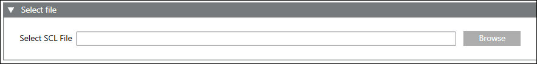
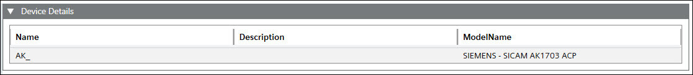
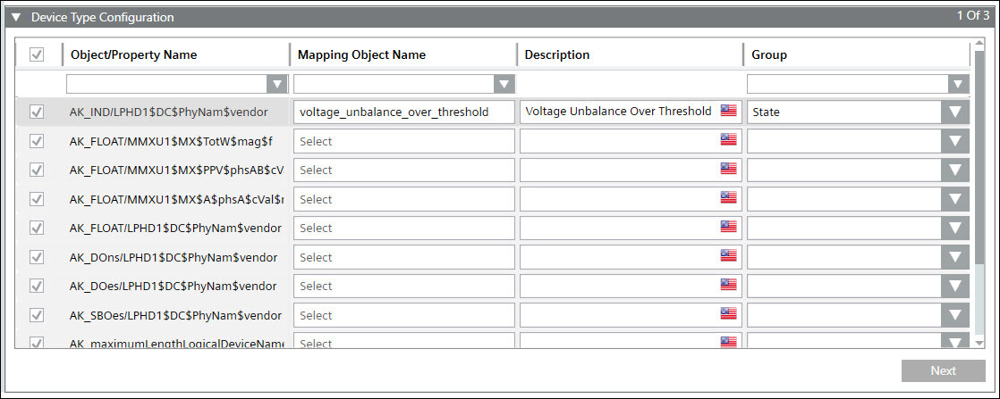
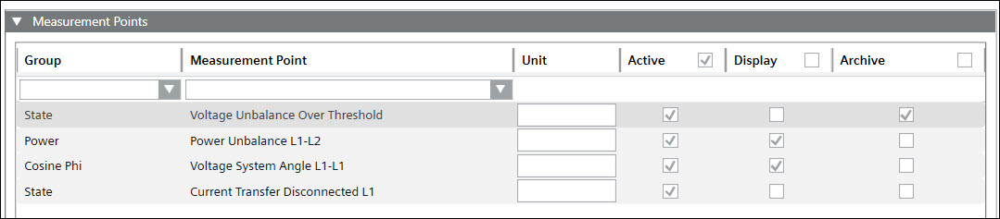
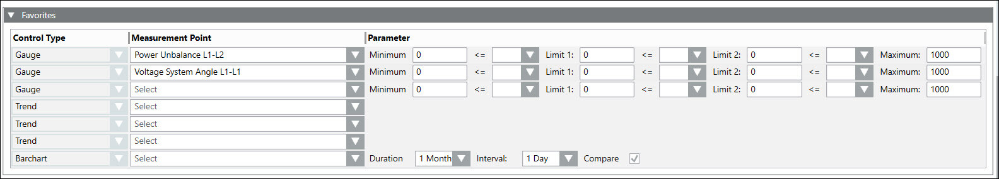
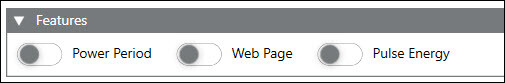
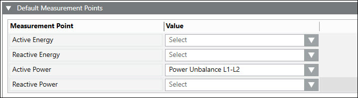
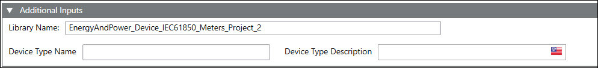
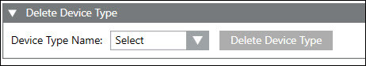

IEC 61850 Configuration Workspace
Create Device Type Workspace
In Create Device Type expander, you can create and configure the device type.
Select File Expander
In Select SCL file, allows you to browse and select IID file of device.

Device Details Expander
In Device Details expander, Name, Description, and ModelName will appear by default when you select the file.

Device Type Configuration Expander
In Device Type Configuration expander, you can select and configure the specific device type.

Item | Description |
Checkbox | Allows you to choose the required object for the current device type. NOTE: Select the checkboxes for the properties to be included in device type. |
Object/Property Name | Displays the list of IEC 61850 objects of the selected device. |
Mapping Object Name | Allows you to enter the measurements points name. |
Description | Displays description of the object. |
Group | Allows you to choose the required group name for which the measurements point needs to be associated. |
Measurement Points Expander
In Measurement Points expander, you can configure groups and measurement points.

Item | Description |
Group | Displays the category of the measurement point. You can select the measurement point category from the dropdown box. |
Measurement Points | Displays the name of the measurement point. |
Units | Displays the units of measurement from the device. |
Active | Select the checkbox for the measurement point to be active. |
Display | Select the checkbox for the measurement point to be displayed in the Operating mode > Overview tab > Measurement Values. |
Archive | Select the checkbox for the measurements points for which data has to be archived. |
Favorites Expander
Favorites expander displays all the configured groups and measurement points.

Item | Description |
Control Type | Displays the modes of representation of the parameters configured through three gauges, three trends and one bar chart. |
Measurement Point | Allows you to select the measurement points to be configured for the corresponding device. |
Parameter | It Allows to set the limits of the gauges and the color for the representing the corresponding measurement time duration to be used in the bar chart. |
Duration | Allows you to select the duration time. |
Interval | Allows you to select the interval time. |
Compare | Allows you to compare the values by selecting the check box. |
Features Expander
Features expander allows you to configure the Power Period, Web Page and Pulse Energy by enabling the radio button.

Item | Description |
Power period | Allows you activate/deactivate power period calculation. NOTE: Power period feature is activated by default when atleast one measurement point has power period group. Load profile period length for power period group type measurement points would be set to 15 minutes. |
Web page | Allows you to see the device web page in operating view. |
Pulse Energy | Allows you to enable COHO calculation. |
Counter | Configure the pulse energy and actual energy data points to get COHO calculations. |
Default Measurement Points Expander
Default Measurement Points expander provides a table to choose related measurement points.

Item | Description |
Measurement Point | Displays all the selected energy and power related measurement points. |
Value | Allows you to select the energy and power related measurement point from the dropdown. |
Additional Inputs Expander
Additional Inputs expander provides more details on the device type.

Item | Description |
Library Name | Displays the library name. NOTE: Drag and drop the library to the Library Name field. |
Device Type Name | Allows you to provide the device type name. NOTE: Device type name should be unique across library. |
Device Type Description | Displays device type description, which is same as device type name. |
Delete Device Type Expander
Delete Device Type expander, allows you to delete the device type.
NOTE: Ensure devices created under device type are deleted before device type is deleted.
